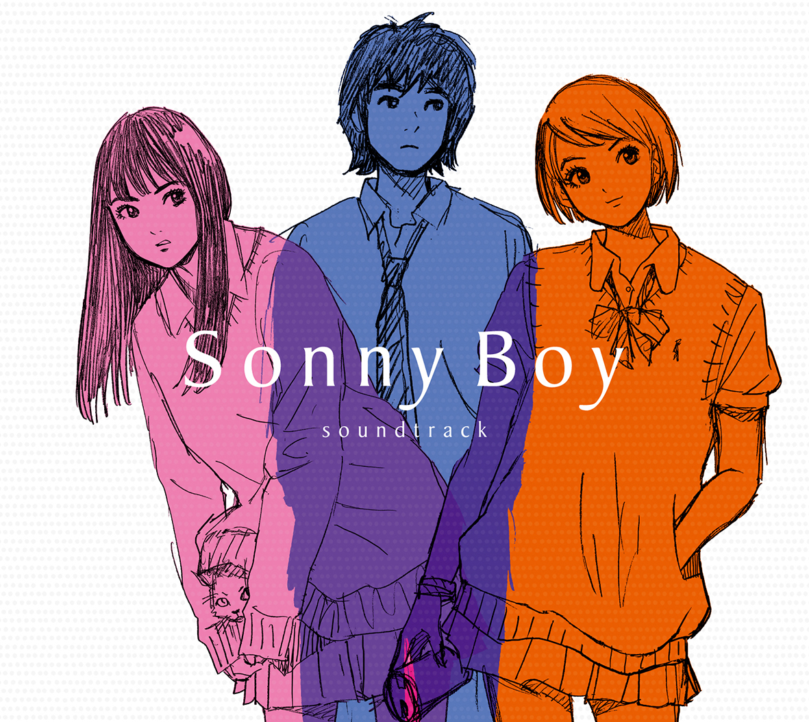

Day 84

Various ◆ Sonny Boy OST ◆ 2021
去年油管上发现的专辑。专辑的气氛很有趣，像是在一场充满失真和噪点的梦中。曲子风格多变，有离奇梦幻的，也有活泼轻快的，有闲适放松的，有正儿八经的。总体而言是一场不错的旅行，推荐一试。作为整体听的时候，出自不同作曲家，不同风格但又有某种相似主题的曲子一首接一首，感觉很棒。
作曲阵容强大，有銀杏BOYZ，落日飛車，VIDEOTAPEMUSIC，ザ・なつやすみバンド，ミツメ，Ogawa & Tokoro，空中泥棒，カネヨリマサル，toe，CONISCH。我只认识一个落日飛車，哈哈。之后有机会了解一下这些乐队，说不定有惊喜。
音乐这么棒，我都有点想看看动画了。中文是《漂流少年》，名字挺不错。看维基说是青春科幻群像剧，看油管评论说有点像 FLCL。说像 FLCL 让我有点犹豫，我对意识流印象不太好。
（更新）看完了，挺棒的作品。对希眼睛的特写镜头让我印象深刻。结尾很有趣，不像其他的故事，在结束的时候总会有些实质性的变化：英雄终于死去，男孩和女孩终成眷属，比赛胜利，等等。《漂流少年》结束时，没有任何实质、明显的改变。没有终成眷属，没有激烈的觉醒，只是主角多了几个月的记忆，心灵得到些成长。这种展开从剧情上讲也挺自然。自然平淡的结尾也不错。
仔细想想，我可能在“无聊现实的大人”这条路上走了太远，已经没法全心全意地欣赏这个故事。观赏的时候我第一反映是吐槽“不合理”的地方而不是享受其中孤独、梦幻、迸发的情感。不是不能体会到，而是时刻被“不合理”警察提醒着，隔着一层玻璃。
也可能不是我的问题，看《红猪》的时候我沉浸得不得了。
音乐当然没得说，每次音乐逐渐响起来的时候都有点激动。听过几遍OST以后再去看动画体验很棒，每次都有“熟悉的 BGM 响起来”的感觉。音乐对故事和氛围的烘托效果真的很强。画面也很棒，看得我酣畅淋漓，好耶。
PS 看了维基才发现，音乐顾问是渡辺信一郎，熟人啊。